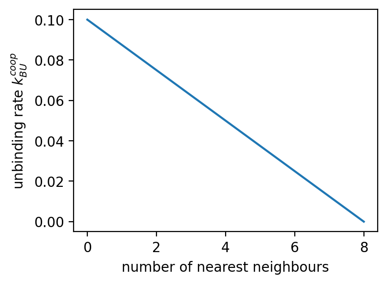
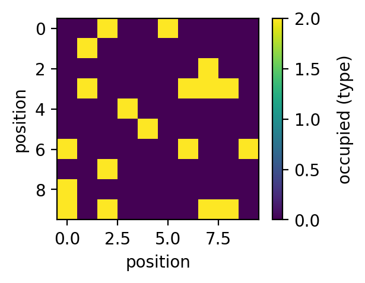
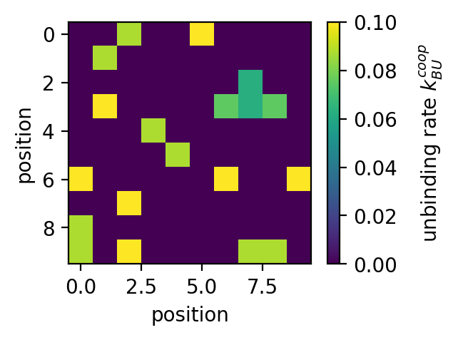
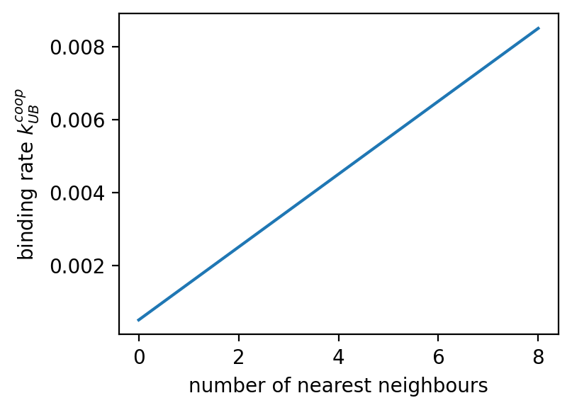
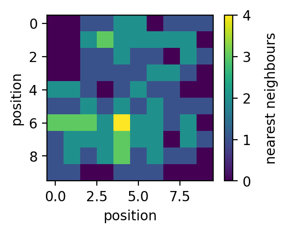
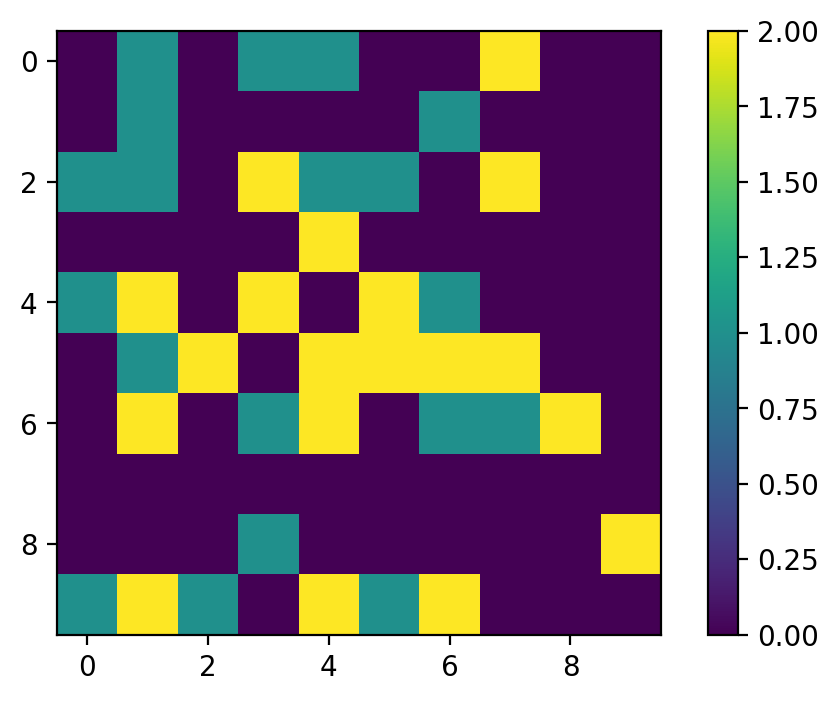

Welcome to E-LTP AMPAR-Model’s documentation!¶
Created on Wed Nov 4 11:48:22 2020
@author: Moritz
-
sm.calcTimeStep(UFP_0, A_spine, kUB, alpha, kBU, kout, kin)[source]¶ Returns integration time step dt. By default simulations are carried out at dt=0.5s. If parameter choices require a smaller time step, dt is set to 0.25s. If dt is still too large, the simulation is cancelled and an error message is displayed. In this case dt needs to be set manually.
- Parameters
- UFP_0float
Mobile receptor pool fixed points. Sets the influx of receptors into spine.
- A_spinefloat
Spine surface area.
- kUBfloat
bidning rate
- alphafloat
cooperativity factor for the binding
- kBUfloat
unbidning rate
- koutfloat
rate at which receptors exit the spine membrane.
- kinfloat
rate at which receptors enter the spine membrane.
- Returns
- float
Integration time step dt.
-
sm.kBUcoop(kBU, NN, PSD, typeID, beta=1.0)[source]¶ Returns the cooperative unbinding rate per bound receptor.
- Parameters
- kBUfloat
unbinding rate
- betafloat, optional
By default beta=1.0. Factor by which the fraction of occupied nearest neighbours lowers the unbinding rate.
- NNarray_like
Matrix that contains the number of nearest neighbours for each grid element.
- PSDarray_like
Matrix representing the PSD grid
- typeIDfloat>0
Receptor-type ID.
- Returns
- out: array_like
Matrix containing the unbinding rates at each occupied grid element.
Examples
Import libraries:
>>> import numpy as np >>> import matplotlib.pyplot as plt >>> from nearestNeighbours import nearestNeighbours >>> from kBUcoop import kBUcoop
Create and populate grid and calculate nearest neighbour matrix:
>>> kBU=0.1 >>> typeID=2 >>> N=10 >>> PSD=np.zeros((N,N)) >>> PSD[np.random.randint(0,N,20),np.random.randint(0,N,20)]=typeID >>> NN=nearestNeighbours(PSD)
Plot:
>>> plt.figure(figsize=(4,3), dpi=150) >>> plt.plot(kBUcoop(kBU, np.arange(0,9), np.array([typeID]*9), typeID)) >>> plt.xlabel('number of nearest neighbours') >>> plt.ylabel('unbinding rate $k_{BU}^{coop}$') >>> >>> fig=plt.figure(figsize=(3,2.25), dpi=150) >>> plt.imshow(PSD) >>> cbar=plt.colorbar() >>> cbar.set_label('occupied (type)', rotation=90, labelpad=10, y=0.5) >>> plt.xlabel('position') >>> plt.ylabel('position') >>> >>> fig=plt.figure(figsize=(3,2.25), dpi=150) >>> plt.imshow(NN) >>> cbar=plt.colorbar() >>> cbar.set_label('nearest neighbours', rotation=90, labelpad=10, y=0.5) >>> plt.xlabel('position') >>> plt.ylabel('position') >>> >>> fig=plt.figure(figsize=(3,2.25), dpi=150) >>> plt.imshow(kBUcoop(kBU, NN, PSD, typeID)) >>> cbar=plt.colorbar() >>> cbar.set_label('unbinding rate $k_{BU}^{coop}$', rotation=90, labelpad=10, y=0.5) >>> plt.xlabel('position') >>> plt.ylabel('position')
Output:
  
{kind=link}
{kind=link}
{kind=link}
{kind=link}
-
sm.kUBcoop(kUB, NN, PSD, alpha=16)[source]¶ Returns the cooperative binding rate per mobile receptor.
- Parameters
- kUBfloat
binding rate
- alphafloat, optional
By default alpha=16. Factor by which the fraction of occupied nearest neighbours increases the binding rate.
- NNarray_like
Matrix that contains the number of nearest neighbours for each grid element.
- PSDarray_like
Matrix representing the PSD grid
- Returns
- out: array_like
Matrix containing the binding rates at each unoccupied grid element.
Examples
Import libraries:
>>> import numpy as np >>> import matplotlib.pyplot as plt >>> from nearestNeighbours import nearestNeighbours >>> from kBUcoop import kBUcoop
Create and populate grid and calculate nearest neighbour matrix:
>>> kUB=0.0005 >>> N=10 >>> PSD=np.zeros((N,N)) >>> PSD[np.random.randint(0,N,20),np.random.randint(0,N,20)]=1 >>> NN=nearestNeighbours(PSD)
Plot:
>>> plt.figure(figsize=(4,3), dpi=150) >>> plt.plot(kUBcoop(kUB, np.arange(0,9), np.array([0]*9))) >>> plt.xlabel('number of nearest neighbours') >>> plt.ylabel('binding rate $k_{UB}^{coop}$') >>> >>> fig=plt.figure(figsize=(3,2.25), dpi=150) >>> plt.imshow(PSD) >>> cbar=plt.colorbar() >>> cbar.set_label('occupied (type)', rotation=90, labelpad=10, y=0.5) >>> plt.xlabel('position') >>> plt.ylabel('position') >>> >>> fig=plt.figure(figsize=(3,2.25), dpi=150) >>> plt.imshow(NN) >>> cbar=plt.colorbar() >>> cbar.set_label('nearest neighbours', rotation=90, labelpad=10, y=0.5) >>> plt.xlabel('position') >>> plt.ylabel('position') >>> >>> fig=plt.figure(figsize=(3,2.25), dpi=150) >>> plt.imshow(kUBcoop(kUB, NN, PSD)) >>> cbar=plt.colorbar() >>> cbar.set_label('binding rate $k_{UB}^{coop}$', rotation=90, labelpad=10, y=0.5) >>> plt.xlabel('position') >>> plt.ylabel('position')
Output:
 
{kind=link}
{kind=link}
{kind=link}
-
sm.nearestNeighbours(PSD)[source]¶ Returns the number of nearest neighbours on a grid.
- Parameters
- PSDarray_like
Grid with occupied and free elements, shape(N, N)
- Returns
- out: array_like
Matrix containing the number of nearest neighbors for each element of the grid matrix.
Examples
Import libraries:
>>> import numpy as np >>> import matplotlib.pyplot as plt >>> from nearestNeighbours import nearestNeighbours
Create and populate grid and calculate nearest neighbour matrix:
>>> N=10 >>> PSD=np.zeros((N,N)) >>> PSD[np.random.randint(0,N,20),np.random.randint(0,N,20)]=1 >>> >>> NN=nearestNeighbours(PSD)
Plot:
>>> plt.figure(figsize=(3,3), dpi=150) >>> plt.imshow(PSD) >>> plt.colorbar() >>> plt.xlabel('position') >>> plt.ylabel('position') >>> >>> plt.figure(figsize=(3,3), dpi=150) >>> plt.imshow(NN) >>> plt.colorbar() >>> plt.xlabel('position') >>> plt.ylabel('position')
Output:
{kind=link}
{kind=link}
-
sm.probabilityEval(Mub, Mbu, PSD, ID_basal, Mub_notBleached=None, Mbu_notBleached=None, ID_notBleached=None)[source]¶ Returns the updated PSD Matrix and the corresponding number of receptors that got bound and unbound. To types, “basal” and “not bleached” can be considered, which is necessary when simulation FRAP.
- Parameters
- Mubarray_like
Matrix containing binding probabilities for the type “basal”.
- Mbuarray_like
Matrix containing unbinding probabilities for the type “basal”.
- Mub_notBleachedarray_like, optional
By default None. Matrix containing binding probabilities for the type “not bleached”.
- Mbu_notBleachedarray_like, optional
By default None. Matrix containing unbinding probabilities for the type “not bleached”.
- PSDarray_like
Matrix representing the PSD grid and its bound receptors.
- ID_basalfloat
Receptor ID of the basal pool.
- ID_notBleached: float
Receptor ID of the not bleached pool.
- Returns
- out: float, float, float, float, array_like
Number of receptors that got bound and unbound of the two types “basal” and “not bleached” and the updated PSD matrix.
Examples
Import libraries:
>>> import numpy as np >>> import matplotlib.pyplot as plt >>> from nearestNeighbours import nearestNeighbours >>> from kBUcoop import kBUcoop >>> from kUBcoop import kUBcoop >>> from probabilityEval import probabilityEval
Set parameters:
>>> U=10 >>> U_notBleached=10 >>> kUB=0.005 >>> kBU=1 >>> N=10 >>> ID_basal=1 >>> ID_notBleached=2 >>> dt=0.5
Create and populate grid and calculate nearest neighbour matrix:
>>> PSD=np.zeros((N,N)) >>> while np.sum(PSD)<20*ID_basal: >>> i=np.random.randint(0,N) >>> j=np.random.randint(0,N) >>> if PSD[i,j]==0: >>> PSD[i,j]=ID_basal >>> >>> while np.sum(PSD)<20*ID_basal+20*ID_notBleached: >>> i=np.random.randint(0,N) >>> j=np.random.randint(0,N) >>> if PSD[i,j]==0: >>> PSD[i,j]=ID_notBleached >>> >>> NN=nearestNeighbours(PSD)
Plot PSD:
>>> plt.figure() >>> plt.imshow(PSD) >>> plt.colorbar()
Calculate probability Matrices and update the PSD Matrix:
>>> Mbu=kBUcoop(kBU, NN, PSD, ID_basal)*dt >>> Mub=kUBcoop(kUB*U, NN, PSD)*dt >>> Mbu_notBleached=kBUcoop(kBU, NN, PSD, ID_notBleached)*dt >>> Mub_notBleached=kUBcoop(kUB*U_notBleached, NN, PSD)*dt >>> >>> PSD,dBoff,dBon,dBoff_notBleached,dBon_notBleached=probabilityEval(Mub,Mbu,Mub_notBleached,Mbu_notBleached,PSD)
Plot PSD:
>>> plt.figure() >>> plt.imshow(PSD) >>> plt.colorbar()
Output: (left: before, right: after)

{kind=link}
{kind=link}
-
sm.update_mobilePool(U, pin, pout, dBoff, dBon, U_notBleached=None, pin_notBleached=None, pout_notBleached=None, dBoff_notBleached=None, dBon_notBleached=None)[source]¶ Updates the value for the mobile receptor pool. When simulating FRAP, a second type “not bleached” is considered.
- Parameters
- Ufloat
Mobile AMPAR pool.
- pinfloat
Probability of a receptor to enter the spine’s mobile pool.
- poutfloat
Probability of a receptor to leave the spine’s mobile pool.
- dBofffloat
Number of receptors that got unbound from the PSD grid.
- dBonfloat
Number of receptors that got bound to the PSD grid.
- U_notBleachedfloat, optional
Mobile AMPAR pool (bleached).
- pin_notBleachedfloat, optional
Probability of a not bleached receptor to enter the spine’s mobile pool.
- pout_notBleachedfloat, optional
Probability of a not bleached receptor to enter the spine’s mobile pool.
- dBoff_notBleachedfloat, optional
Number of not bleached receptors that got unbound from the PSD grid.
- dBon_notBleachedfloat, optional
Number of not bleached receptors that got bound to the PSD grid.
- Returns
- out: float, float
U, U_notBleached.
Created on Thu Nov 5 15:35:31 2020
@author: Moritz
-
FRAP.FRAP(N_List, UFP_List, beta, alpha, kUB, kBU, duration, Nr_Trials)[source]¶ Returns evolution over time of photobleached and not photobleached mobile and bound receptors (FRAP simulation).
- Parameters
- N_Listarray_like
List of PSD sizes P
- UFP_Listarray_like
List of mobile receptor pool fixed points. Sets the influx of receptors into spine.
- betafloat
cooperativity factor for the unbinding. (Should be set to 1 or 0)
- alphafloat
cooperativity factor for the binding
- kUBfloat
bidning rate
- kBUfloat
unbidning rate
- durationfloat
Duration of the simulation
- Nr_Trialsinteger
Number of trials.
- Returns
- B_Narray_like
Time evolution of bound receptors for different conditions and number of Trials; shape(len(N_List), len(UFP_List), Trials, duration/0.5+1)
- U_Narray_like
Time evolution of mobile receptors for different conditions and number of Trials; shape(len(N_List), len(UFP_List), Trials, duration/0.5+1)
- B_notBleached_N
Time evolution of bound receptors not photobleached for different conditions and number of Trials; shape(len(N_List), len(UFP_List), Trials, duration/0.5+1)
- U_notBleached_N
Time evolution of mobile receptors not photobleached for different conditions and number of Trials; shape(len(N_List), len(UFP_List), Trials, duration/0.5+1)
- PSDarray_like
Matrix representing the PSD grid and its receptors at the end of the simulation (bleached, not bleached).
- Timearrayl_like
Time; shape(duration/0.5+1,)